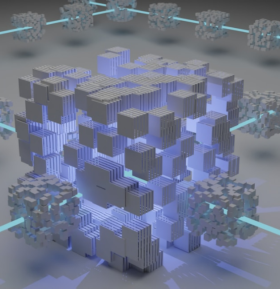

Get Clarity On The Financial Health Of The Companies You’re Investing In And Avoid Huge Losses
Quant Island helps venture capitalists better gauge the value of a startup before investing. Our financial analysts, engineers, and data scientists team has made specialised models that do due diligence. Minimize your risk exposure

Enjoy Peace of Mind By Monitoring The Accuracy of Your Machine Learning Models
We help you deploy your machine learning models for high-precision results. We validate models built with traditional quantitative methods and models based on machine learning. And we also test smart contract models.
Gain An Edge By Launching Your Crypto Project On The Appropriate Blockchain
We ensure our clients launch their projects on the right blockchain(s). This is done by looking at tokenomics, giving people access to quantitative vulnerabilities, and checking smart contracts. We also give professional advice on choosing the blockchain platform and making sure it is right for the project.



.png)
.png)